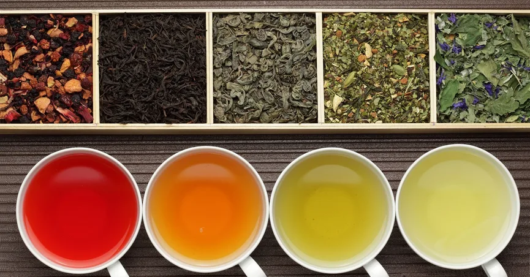
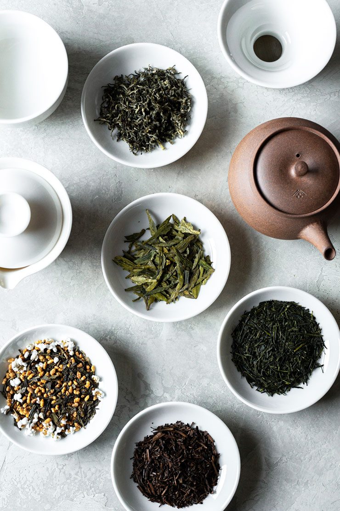

[immagine:Raccolto da Google]
>If this is coffee,please bring some tea,if this is tea,bring me some coffee.
-Abraham Lincon
primi riferimenti testuali certi sul consumo del tè in Cina risalgono al III secolo. Tra i maggiori promotori del tè vi furono i monaci buddisti che lo adottarono come bevanda
rituale e tonico. Durante l'epoca Tang il tè si diffuse in tutto il paese, grazie anche al contributo del Canone del tè scritto da Lu Yu nel 760.Durante la dinastia Song l'arte cinese
del tè raggiunse la massima sofisticazione. In questo periodo si diffuse anche in Giappone, dove nel XVI secolo venne codificata una particolare forma di preparazione ritualizz-
ata (il cosiddetta "Cha no yu"). In Cina, nel corso della dinastia Ming, si affermò il consumo del tè in foglie e si incominciò a produrre, oltre ai tè verdi, anche tè ossidati e parzial-
mente ossidati.
Il primo riferimento al tè in un testo europeo è contenuto nei resoconti del veneziano Giovan Battista Ramusio. Presumibilmente furono i Portoghesi a introdurre la bevanda in Europa,
ma la prima importazione di cui si ha traccia fu da parte della Compagnia Olandese delle Indie Orientali. In Europa il tè divenne dapprima popolare in Francia e nei PaesiBassi.Inizialmente
vi furono posizioni diverse da parte dei medici sulla nuova bevanda orientale: alcuni lo ritennero dannoso alla salute, altri come il medico olandese Cornelis Bontekoe ne promossero
il consumo come rimedio per tutti i mali.
Il primo locale a servire il tè in Inghilterra fu la caffetteria di Thomas Garway nel 1657. La Compagnia inglese delle Indie orientali cominciò a
importarlo a partire dal 1669 e nel corso del secolo successivo il tè divenne la voce più importante nei traffici inglesi con l'Oriente. Il consumo del tè in Gran Bretagna crebbe moltissimo
e si impose come costume nazionale.

Nelle consolidate tradizioni britanniche la bevanda viene consumata varie volte al giorno. Tra i momenti più importanti vi sono la
colazione e il tè pomeridiano (il cosiddetto "tè delle cinque") generalmente accompagnato da semplici dolci e tartine (Low tea) oppure consistente in un vero e proprio pasto che sostituisce la cena
(High tea). A partire dal 1834 gli inglesi introdussero la coltivazione e la produzione di tè anche nei loro territori coloniali in India.[8]
Le più famose e antiche marche che importano e producono le
miscele (blend) sono la Twinings e la Fortnum and Mason's, entrambe con sede a Londra. Altre marche famose inglesi sono la Lipton, la Whittard e la Harrods (i grandi magazzini londinesi).
Un'altra famosa marca è la compagnia russa Orimi Trade Group che è da tempo la più grande azienda russa di bevande calde e la più grande produttrice russa di tè e caffè. Le marche di produzione di tè della Orimi Trade Group sono il Greenfield tea e Tess tea.